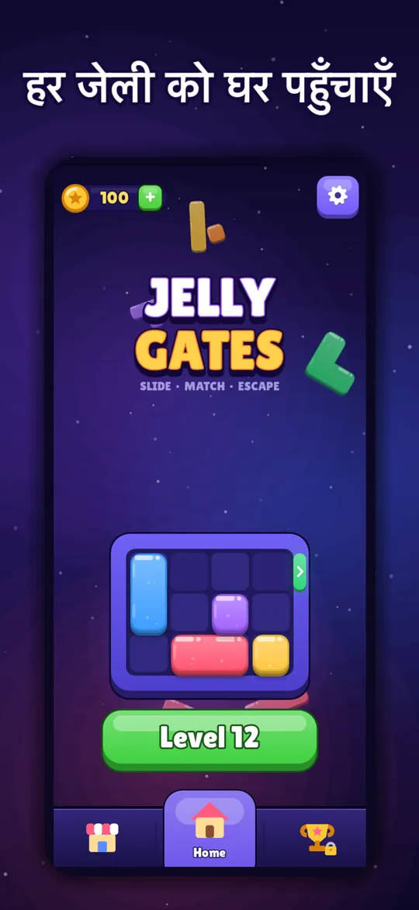
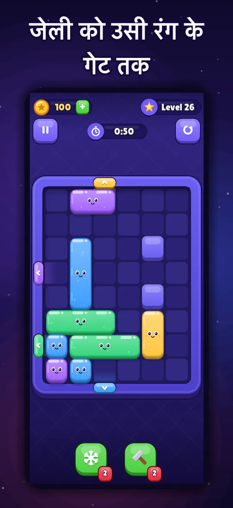
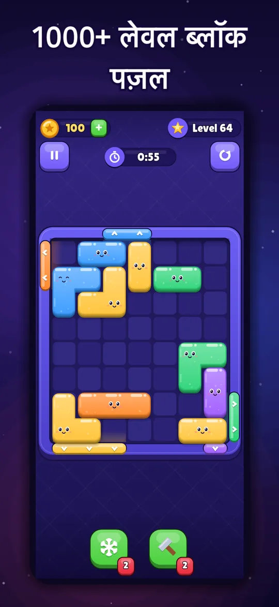
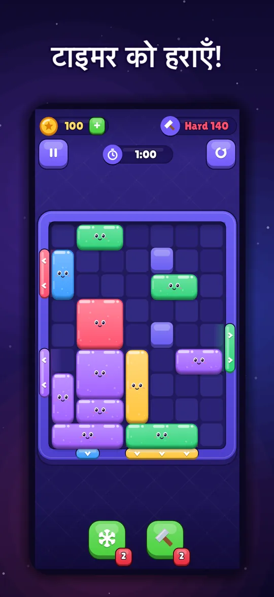
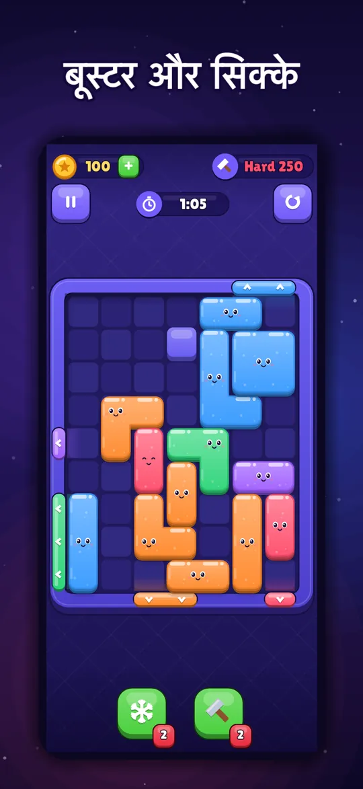

Jelly Gates कलर ब्लॉक पज़ल
हर जेली को उसी रंग के गेट तक स्लाइड करें और टाइमर खत्म होने से पहले पूरा बोर्ड खाली करें।
- जल्द आ रहा हैGoogle Play
- जल्द आ रहा हैApp Store
मुफ़्त में खेलें, विज्ञापनों के साथ। Android और iPhone के लिए।

एक के बाद एक, हर जेली को बाहर निकालने का मज़ा
आगे की सोचें, सही जेली को सही समय पर स्लाइड करें और बोर्ड को खाली होते देखें।





एक कलर ब्लॉक पज़ल जहाँ किस्मत नहीं, प्लानिंग काम आती है
Jelly Gates क्लासिक स्लाइडिंग ब्लॉक पज़ल को एक रसीले कलर जैम में बदल देता है। बोर्ड चमकदार जेली ब्लॉक से भरा है, और हर ब्लॉक अपने रंग के गेट से होकर घर पहुँचना चाहता है। जेली एक-दूसरे का रास्ता रोकती हैं, इसलिए आपकी चालों का क्रम ही सब कुछ है।
यह लॉजिक पज़ल गेम उन किशोरों और वयस्कों के लिए है जिन्हें सिर्फ़ टाइम पास नहीं, बल्कि असली दिमाग वाला गेम चाहिए। हर बोर्ड एक छोटी पहेली है: रंगों को पढ़ें, रास्ता रोकने वाले ब्लॉक पहचानें और सही क्रम ढूँढें। अगर आपको स्लाइडिंग ब्लॉक पज़ल, जैम पज़ल या कलर सॉर्ट गेम पसंद हैं, तो यह जेली ब्लॉक पज़ल आपके फ़ोन पर बिल्कुल फ़िट बैठेगा।
-
1000+ पज़ल लेवल
पार करने के लिए 1000 लेवल, और उसके बाद अनगिनत रीमिक्स लेवल, ताकि पज़ल कभी खत्म न हों।
-
हर जेली का अपना गेट
लाल जेली सिर्फ़ लाल गेट से बाहर निकल सकती है, और नीली जेली सिर्फ़ नीले गेट से।
-
हार्ड लेवल
हर 10वाँ लेवल एक हार्ड लेवल है, जो आपके लॉजिक की असली परीक्षा लेता है। बीच-बीच में थोड़े आसान लेवल आते हैं, ताकि दिमाग को आराम मिले।
-
Freeze और Smash
मुश्किल जैम के लिए दो बूस्टर: टाइमर रोककर आराम से प्लान करें, या रास्ता रोक रही एक जेली को तोड़ दें।
-
ऑफ़लाइन खेलें, कहीं भी
Wi-Fi की ज़रूरत नहीं। छोटे लेवल छोटे ब्रेक, फ़्लाइट या रोज़ के सफ़र के लिए बिल्कुल सही हैं।
-
अपने अंदाज़ वाली जेली
हाव-भाव वाले चेहरों वाली चमकदार जेली, जो हिलती, दबती और उछलती हैं, और हर स्लाइड पर मज़ेदार साउंड।
कैसे खेलें
कुछ ही सेकंड में सीखना आसान, महारत हासिल करना मुश्किल।
-
स्लाइड करें
जेली को खींचकर बोर्ड पर स्लाइड करें। पहले रास्ता रोकने वाले ब्लॉक हटाएँ।
-
रंग मिलाएँ
हर जेली को बोर्ड के किनारे बने उसी रंग के गेट तक ले जाएँ।
-
बाहर निकालें
टाइमर खत्म होने से पहले बोर्ड से हर जेली को बाहर निकालें।
क्या आप हर जेली को घर पहुँचाने के लिए तैयार हैं?
लेवल 1 से शुरू करें और देखें कि आपका लॉजिक आपको कितनी दूर ले जाता है।
- जल्द आ रहा हैGoogle Play
- जल्द आ रहा हैApp Store
Jelly Gates मुफ़्त में खेला जा सकता है और इसमें विज्ञापन हैं। इनाम वाले वीडियो हमेशा वैकल्पिक हैं।
सहायता
कोई सवाल है, किसी बग की जानकारी देनी है या गेम के लिए कोई आइडिया है? डेवलपर को लिखें।
संपर्क
हमें ईमेल करें और हो सके तो अपने फ़ोन का मॉडल और लेवल नंबर भी बताएँ।
abdelrhmannkhaledd1@gmail.comJelly Gates को AbdelRhman Khalid ने डेवलप और पब्लिश किया है। गेम डेटा के साथ क्या करता है, यह गोपनीयता नीति (अंग्रेज़ी में) में देखें।
क्या इंटरनेट कनेक्शन ज़रूरी है?
नहीं। Jelly Gates ऑफ़लाइन चलता है, इसलिए आप फ़्लाइट में, ट्रेन में या घर पर खेल सकते हैं।
क्या गेम मुफ़्त है?
हाँ। यह मुफ़्त में खेला जा सकता है और इसमें विज्ञापन हैं। कुछ लेवल के बीच छोटे विज्ञापन दिख सकते हैं, और इनाम वाले वीडियो हमेशा वैकल्पिक हैं।
मेरी प्रोग्रेस कहाँ सेव होती है?
सिर्फ़ आपके अपने डिवाइस पर। कोई अकाउंट नहीं बनाना पड़ता, और गेम अनइंस्टॉल करने पर आपकी प्रोग्रेस मिट जाती है।
किसी लेवल पर अटक जाऊँ तो क्या करूँ?
टाइमर रोकने के लिए Freeze इस्तेमाल करें, या रास्ता रोक रही एक जेली को तोड़ने के लिए Smash। बूस्टर आपको हार्ड लेवल जीतने पर, सिक्कों से या एक वैकल्पिक छोटा वीडियो देखकर मिलते हैं।